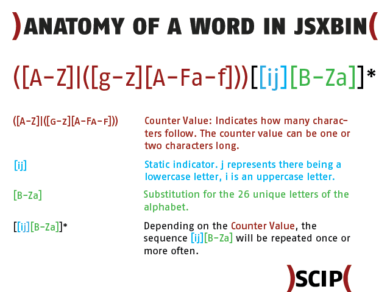

JSXBIN: reversing the binary file type
An article by Oliver Kunz (scip AG).
The topic of this week’s Labs is reversing a JSXBIN (JavaScript Binary) file. This article gives you an overview of our analysis and should easily allow you to understand the steps and join in on the work. JSXBIN is a concatenation of JSX and BIN. The first part, JSX, is the default file extension for Adobe ExtendScript files. That’s basically an extended version of JavaScript. Adobe’s ExtendScript Toolkit (ESTK) is an editor to create these scripts and is used in the Adobe Creative Suite (CS). The BIN part of the extension probably refers to binary.
Here is what Adobe has to say about JSXBIN files:
The .jsxbin files are compiled JavaScript; they are in binary format so the source code is not exposed...
According to that document, the use of JSXBIN happens for two reasons:
- To protect the source code from exposure
- To protect the scripts from accidental modifications
This article will demonstrate that JSXBIN files are nothing but obfuscated JSX source code. With some effort the source is recognizable, and with some more effort it might even be possible to completely reverse the JSXBIN to a JSX.
How to create a JSXBIN file
After installing the ESTK, let’s have a look at how to create a binary version of a JSX file.
- Open the ESTK and edit the newly opened file.
- Save the file by pressing Ctrl + S (optional).
- To export the JSX to JSXBIN, press Ctrl + Shift + E or choose the relevant menu option under File.
The binary that isn’t binary
Open your newly created JSXBIN file in a text editor (e.g. Notepad or Notepad++). The first thing to notice: it’s not really binary in the sense of a compiled executable. In fact, it’s all ASCII limited to the characters [A-Za-z0-9]. It might remind you of base64 encoding. If you like, go on and try to decode it as base64. If we look at the meaning and method of the code, it is somewhat similar to base64: it uses the same character set to represent the original JSX file. It is definitely not binary.
Like I said, a JSXBIN is nothing but code obfuscation. For those of you interested in code obfuscation, there are contests to write the best obfuscated code or break a piece of obfuscated code. However, it is now clear that the first purpose — to protect the source code from exposure — is certainly not true. It only takes time to crack the obfuscation.
The good news for us: we have the ESTK to create the obfuscation of any plain text we like. That’s exactly what my first approach in reversing a JSXBIN was. And here are the results.
The starting point
Let’s forget about the previously created JSXBIN file for a second and start from scratch. The first script we’re going to export is an empty JSX file. This gives us information about possible static content.
The following is all the content of a JSXBIN from an empty JSX script:
@JSXBIN@ES@2.0@MyBn0DzABByB
For the next export, enter a single letter (e.g. the lower case a) in the JSX script file and export that script. You will receive the following JSXBIN content:
@JSXBIN@ES@2.0@MyBbyBn0ABJAnAjzBjBBf0DzACByB
Repeat this yourself, and after many more JSXBIN files we are able to identify somewhat static parts:
- A JSXBIN file always starts with
@JSXBIN@ES@2.0@, which could be some sort of description header (this static string will be removed in the remaining examples). - The description header is always followed by the letters
MyB. - The last possible static content is the three last letters
ByBthat end every JSXBIN file so far.
The next steps
We have identified what seems to be a description header and a possible static three-letter block at the beginning and end of the JSXBIN file. The next steps are to identify the representation of different characters and symbols, and their combinations.
For example, extend the one-letter script above with an additional lower case a and export the script aa, followed by aaa and so on. After that, do the same for every other letter, then write each on a different line, and so on. After identifying the character representation, start identifying objects, variables, functions, control structures etc. And then the combination of all of those.
Alphabet representation
Having exported many scripts with various combinations of letters, the following letter representation was identified. A lower case letter (not as a data type string) is represented by j[B-Za], starting with a = jB and ending with z = ja. The upper case letters differ only in the leading value: instead of j, a lower case i is used. This gives A = iB and Z = ia.
In addition to the representation of lower and upper case letters, a leading value that represents the number of letters was identified. For a single letter like a that was a B; for two letters such as aa that was a C. This goes on up the alphabet and will be discussed in more detail in the section about counter values.
Lower case Representation Upper case Representation a jB A iB b jC B iC c jD C iD d jE D iE e jF E iF f jG F iG g jH G iH h jI H iI i jJ I iJ j jK J iK k jL K iL l jM L iM m jN M iN n jO N iO o jP O iP p jQ P iQ q jR Q iR r jS R iS s jT S iT t jU T iU u jV U iV v jW V iW w jX W iX x jY X iY y jZ Y iZ z ja Z ia
The table is true for variable names, function names etc. In the case of the string data type, the letters are represented in the same form, but before the leading letter counter value a new identifier — Fe — is inserted to show that the following letters and characters are part of a string. We are now able to translate the value Test to the JSXBIN representation EiUjFjTjU (including the counter value E). The same value as the data type string “Test” is represented as FeEiUjFjTjU (including the string marker Fe and the counter E).
Special characters representation
The table below shows some special characters recognised during the analysis.
Special character Description Representation (in string) " " Space hA " Quotation Mark hC ' Apostrophe hH & Ampersand hG \ Backslash ic : Colon ha . Period hO - Dash hN _ Underscore if ? Question Mark hf ^ Caret ie ` Accent Grave ja ~ Tilde je ´ Accent Aigu lU + Plus hL * Asterisk hK # Hash hD % Percentage sign hF / Slash hP | Pipe jc ( Parenthesis Open hI ) Parenthesis Close jJ > Is Greater Than hc < Is Less Than he
We are now able to represent the string “Test Value” in JSXBIN as FeKiUjFjTjUhAiWjBjMjVjF.
Digits representation
We have identified lower and upper case letters and special characters, as well as the difference between functional strings (variable, function etc. names) and data type strings. As a next step, we are going to analyse the representation of digits and numbers as numerical values and as part of a data type string.
The procedure is the same as the one used to identify the letter values. First, there’s an export of a JSX script with a single digit, then multiple digits on the same line, and the same digit on different lines.
The first export is of the script with a single digit 1 (remember, we’re removing the static description header from the output):
MyBbyBn0ABJAnAFdB0EzABByB
In the above export, the digit 1 is represented by dB. Unlike the upper and lower case letters, the string “1” is represented by a different value, hR. The table below shows the digit, its representation as a number and its representation in a string data type.
Digit Representation Numerical string Representation 0 d (dA – unconfirmed) "0" hQ 1 dB "1" hR 2 dC "2" hS 3 dD "3" hT 4 dE "4" hU 5 dF "5" hV 6 dG "6" hW 7 dH "7" hX 8 dI "8" hY 9 dJ "9" hZ 10 dK "10" hRhQ 11 dL "11" hRhR 12 dM "12" hRhS 13 dN "13" hRhT 14 dO "14" hRhU 15 dP "15" hRhV 16 dQ "16" hRhW 17 dR "17" hRhX 18 dS "18" hRhY 19 dT "19" hRhZ 20 dU "20" hShQ 21 dV "21" hShR 22 dW "22" hShS 23 dX "23" hShT 24 dY "24" hShU 25 dZ "25" hShV 26 dga "26" hShW 27 dgb "27" hShX 28 dgc "28" hShY 29 dgd "29" hShZ 30 dge "30" hShQ 31 dgf "31" hShR 32 dhA "32" hShS 33 dhB "33" hShT
Note: The table only lists the values for the digits/numbers and does not contain any form of counter value.
We can see a clear difference between the digit character and the numerical string equivalent. The latter is just a combination of the string values for 0–9. This means the string “22792” is represented as FeFhShShZhRhS (including the string marker Fe and the counter value F). The number 22792 as a number acts like a counter (see the section below) and is represented as d2kAiZ.
Counter values

Counters are found in different functions. They may count the number of characters used in the name of a variable or function, or the length of a string; there might even be some sort of line numbers/counters. To my understanding, not all counters have the same starting value. What they all have in common is the overflow after a multiple of 32.
Character counters
We have already introduced the counter value in this article. Time to expand on that. A single lower case letter is substituted with j[B-Za], excluding the counter value. If we add the counter value — the character indicating how long the following string is — the single lower case letter a appears in the JSXBIN as BjB. Let’s have a look at an example, namely the word Test, which is a functional string or a string data type. Test is a four-letter word, and we have deduced that the leading counter value for four-letter words is E. Therefore, we can state that the leading counter value character of a single-letter string is B, and if we are trying to decode a four-letter character combination, it’s E.
Line counters
Now let’s try something else. Write the same characters on multiple lines, create a JSXBIN and try to find the value that represents a line break.
Here is an example of a multi-line file:
"line1" "line2" "line3"
And its JSXBIN representation (some formatting was applied to outline the different lines and blocks):
MyBbyBn0AD
("line1") JAnA Fe FjMjJjOjFhR
("line2") JBnA Fe FjMjJjOjFhS
("line3") JCnA Fe FjMjJjOjFhT
0DzABByB
Let’s ignore the first and the last line and concentrate on the three lines in between. The string representation of “line[1-3]” is FeFjMjJjOjFh[R-T]. In order to identify the line counter, we can focus on the first four characters. They are of the form J[A-C]nA. If there is a line counter or line number value, it has to be the second value of that four-character block.
The next example is an export of a file with 33 lines. We are only looking at four lines of the JSXBIN string (it’s only an excerpt of the lines that show the overflow happening between 26 and 27, and between 32 and 33; some formatting is applied for better explanation):
("line26") J Z nA Fe GjMjJjOjFhShW
("line27") J ga nA Fe GjMjJjOjFhShX
("line32") J gf nA Fe GjMjJjOjFhThS
("line33") J hA nA Fe GjMjJjOjFhThT
Again, focusing on the characters from the beginning up to the string data type delimiter (Fe), we can see that the first letter (J) remains static. It is followed by the counter value, which can consist of either one or two characters. The block ends with two static characters (nA).
We can see that after the number 26, two characters are used to represent 27, and from line 32 to 33 an overflow occurs.
Here is what’s happening if we only look at the binary representation of the counters:
Z 01011010 ga 01100111 01100001 gf 01100111 01100110 hA 01101000 01000001
But why isn’t it just 01011011 followed by 01011100 after Z? The first byte represents [ in ASCII, the second represents \. So it is for the simple reason that only [A-Za-z0-9] are used in the JSXBIN file.
The counter table
In the following table, you will find the counter values up to the first overflow and some more overflow examples.
Counter value Representation 0 A (only an assumption) 1 B 2 C 3 D 4 E 5 F 6 G 7 H 8 I 9 J 10 K 11 L 12 M 19 T 20 U 21 V 22 W 23 X 24 Y 25 Z 26 ga 27 gb 28 gc 29 gd 30 ge 31 gf 32 hA 63 hf 64 iA 95 if 96 jA 127 jf 128 kA
Variables
In the previous section, we identified the representation of different characters, the representation in different cases (string data type or not), and possible numbering structures or counters.
In this section, we are going to look at variable declaration. You could start again and build up the declaration step by step. That’s what was done for this article, but we’ll skip it and go straight to a more complex example.
var a=2; a=1; a; var b=null; b=1; var test=1; test = a;
The JSX script is represented (in a formatted form to identify elements) below:
MyB byB n0AG a) JAnA Sz BjB ByB ndCft b) JBnA S ByB ndBff c) JCnA V BfyB d) JDnA Sz BjC CyB nbft e) JEnA S CyB ndBff f) JFnA Sz EjUjFjTjU DyB ndBft g) JGnA S DyB V BfyB nff AD B40Bi AC 4B0Ai AD 4C0Ai AAD AzAE ByB
Let’s break some of these lines into blocks:
Line a) JAnA Sz BjB ByB ndCft
- Block #1
JAnA:A(see the section Counter values) - Block #2
Sz: observed when a variable is declared and defined in one construct - Block #3
BjB: see the sections Alphabet representation and Counter values - Block #4
ByB: possibly a reference - Block #5
ndCft:dCrepresents the digit 2
Line b) JBnA S ByB ndBff
- Block #1
JBnA:B(see the section Counter values) - Block #2
S: observed when a declared variable is assigned a new value - Block #3
ByB: possibly a reference - Block #4
ndBff:dBrepresents the digit 1
Line c) JCnA V BfyB
- Block #1
JCnA:C(see the section Counter values) - Block #2
V: observed when a variable is referenced - Block #3
BfyB: very similar toByB; this could possibly be a reference to the variable data
Line g) JGnA S DyB V BfyB nff
- Block #1
JGnA:G(see the section Counter values) - Block #2
S: observed when a declared variable is assigned a new value - Block #3
DyB: possibly the reference to the variable test - Block #4
V: observed when a variable is referenced - Block #5
BfyB: could possibly be a reference to the variable data - Block #6
nff: remains unknown, but is very close to the last block in line b) (ifdBis removed)
The line below g) (AD B40Bi AC 4B0Ai AD 4C0Ai AAD) is important, but its meaning is unknown as yet. A similar line always appears when variables are used.
Functions
We are going to analyse functions in this section, beginning with empty functions and adding more content later in the analysis.
Empty functions
We start with empty, one-liner functions:
function a(){}
function b(){}
function c(){}
This is the converted JSXBIN content:
MyB byB nAD
MAn0 Dz BjB B0A
MBn0 Dz BjC CAB
MCn0 Dz BjD DAC
0EzAE ByB
Looking at this example, we might be able to identify some of the elements:
- The first block
M[A-C]n0is very similar to the line numbering scheme (see Counter values). Dzis observed as some sort of key indicator for the declaration of a function. Similar toSz(see Variables).Bj[B-D]is clearly the name of the function.- The last block could partially represent a form of reference (first letter) and again some sort of counter (last letter).
Next, we will have a look at two empty functions, but this time declared over multiple lines:
1) function a(){
2)
3)
4)
5)
6) }
7) function b(){
8)
9)
10)
11)
12) }
Note: The line numbers are added for visibility and are not part of the JSX script.
The JSX script is represented in JSXBIN by (line designations a) and b) are added for visibility):
MyB byB nAC a) MAn0 Dz BjB BAF b) MGn0 Dz BjC CAL 0EzAD ByB
If we compare line a) with the first function line (MAn0 Dz BjB B0A) of the first example, we see that the last two letters changed. If we compare line b) with the second function line (MBn0 Dz BjC CAB) of the first example, we see that the second and the last letters changed. The only difference in the source code is the empty lines.
Hence, the second letter might declare the line number where the function declaration starts (function a(){) and the last letter defines the line number where the function declaration ends (}).
Function calls
Before looking at more complex function definitions, here is an example with multiple functions that calls more than one function:
function xxa(){}
xxa();
function bbb(){}
bbb();
function ccc(){}
ccc();
function ddd(){}
eee();
function eee(){}
ddd();
xxa();
bbb();
ccc();
ddd();
eee();
xxa();
bbb();
ccc();
ddd();
eee();
xxa();
bbb();
ccc();
ddd();
eee();
The converted JSXBIN string:
MyB byB nAF
MAn0 Dz DjYjYjB B0A
MCn0 Dz DjCjCjC CAC
MEn0 Dz DjDjDjD DAE
MGn0 Dz DjEjEjE EAG
MIn0 Dz DjFjFjF FAI
U
JBnA EjB fnf
JDnA EjC fnf
JFnA EjD fnf
JHnA EjF fnf
JJnA EjE fnf
JKnA EjB fnf
JLnA EjC fnf
JMnA EjD fnf
JNnA EjE fnf
JOnA EjF fnf
JPnA EjB fnf
JQnA EjC fnf
JRnA EjD fnf
JSnA EjE fnf
JTnA EjF fnf
JUnA EjB fnf
JVnA EjC fnf
JWnA EjD fnf
JXnA EjE fnf
JYnA EjF fnf
0DzAG ByB
By analysing the JSXBIN string, we can see that the function calls between the function declarations are shifted down. As a consequence, all function declarations are bundled at the beginning of the JSXBIN string (have a look at the second letter after M or J, which indicates the line number).
We are also able to identify the structure of a function call:
- The first block contains the line number:
J[counterValue]nA. - The second block contains a reference to the called function:
Ej[reference]. - The last block is unknown.
- The line that contains a solitary
Uis also unknown.
Let’s have a closer look at the second block and take the first function call (xxa()) as an example. The definition of the function xxa() equals the line MAn0 Dz DjYjYjB B0A, and the call of the function xxa() equals the line JBnA EjB fnf. Note that the first letter of the last block in the function declaration line equals the last letter of the second block in the function calling line (here B). Therefore, that seems to be the reference value, and Ej must be some sort of generic function call operation.
Multi-line functions
As outlined at the beginning of this section, we will now analyse functions with more content. We will see that certain elements from the section above change and new elements are inserted.
1) function a(){
2) //test1
3) "alpha"
4) //test2
5) }
Note: The numbers 1–5 are inserted for visibility and are not part of the actual content.
This is the (slightly formatted) JSXBIN output string:
MyB byB nAB a) MA byB n0 AB b) JCnA FeFjBjMjQjIjB 0 c) Dz BjB BAE 0EzACByB
If we compare line a) with the equivalent line of the earlier example (MAn0 Dz BjB BAF), we can identify some strong differences:
- First, after the line number (
A), a triple (byB) is inserted. - Blocks two, three and four of the earlier example are gone.
- The value
ABis new.
Two other details to note:
- Lines 2) and 4) are not part of the JSXBIN string. This means comments are stripped out during the JSX export.
- Line b) is, as expected, the string “alpha”.
Line c) contains the remaining parts of the function declaration of the earlier example (MAn0 Dz BjB BAF). The last letter, F, is equivalent to the number 5, which equals the line number where the function declaration ends.
Now let’s look at an example where the function is called on a line below the declaration:
1) function a(){
2) //test1
3) "alpha"
4) //test2
5) }
6)
7) a();
Note: The numbers 1–7 are inserted for visibility and are not part of the actual content.
Transformed to JSXBIN:
MyB byB nAB a) MA byB n0 AB b) JCnA FeFjBjMjQjIjB 0 c) Dz BjB BAE d) B e) JGnA EjB fnf 0DzAC ByB
- Lines a) – c) are the same as in the previous example.
- The meaning of line d) is unclear so far.
- Line e) is the function call. The reference
Bin the last block again equals the first letter of the last block on line c).
So far, our examples are very simple and don’t have a lot of content. We will now extend the function with a variable declaration:
1) function a(){
2) //test1
3) var non=null;
4) //test2
5) }
The converted JSXBIN:
MyB byB nAB a) MA byB n0 AB b) JCnA Sz DjOjPjO BA nbft c) AB B40Bi AAB d) Az BjB CAE 0EzAD ByB
Line b) is the variable declaration (see the section Variables for more details). As mentioned at the end of the section Variables, there is a line whose function is still unknown. A similar line appears here as line c).
Another difference can be seen in line d): what was Dz before turned into Az with the declaration of a variable.
We extend the last example and add another variable to the function:
1) function a(){
2) //test1
3) var non=null;
4) var alpha="alpha";
5) //test2
6) }
The converted JSXBIN:
MyB byB nAB a) MA byB n0AC b) JCnA Sz DjOjPjO BA nbft c) JDnA Sz FjBjMjQjIjB BCB neFjBjMjQjIjB ft d) AC C 4B0Ai A B40Bi AAC e) Az BjB DAF 0EzAE ByB
In this example, line c) is the newly added variable alpha with the assigned value “alpha”. The added variable also affects line d): the old one was AB B40Bi AAB and the new one is AC C 4B0Ai A B40Bi AAC.
- The first block changed in the second letter, from
BtoC; this could also be some sort of counter. - Then three new blocks are included:
C 4B0Ai A. - And the last letter of the last block also changes from
BtoC, which could be connected to the first point of this list.
Function conclusion
There is certainly a lot going on in the conversion of a function from JSX to JSXBIN. Reversing the full algorithm would take much more time, especially because of the unrecognized parts in the variable declaration.
To summarize what I have so far:
- The function declaration is listed in reverse (the name of the function comes after the content of the function).
- Before a function, the indicator
M[A-Z]shows where in the source the declaration starts. - After the function name and its reference, the letter refers to the line number where the declaration ends.
- A function call is always of the form
Ej[referenceLetter].
Values that are not printed
Some parts are not represented in a JSXBIN string at all. Among others, these are:
- Comments
- Closing semicolons of the instructions
- Any brackets, as long as they are not part of a string data type
Conclusion
For the time being, this is the end of the reversing of the JSX to JSXBIN export functionality. With the functionality described in this article, it is possible to write a simple script converting the identified elements back into JSX. Some elements may be replaced with wrong values, because such a script identifies strings rather than being a complete re-converter.
This article was posted in as much detail as necessary to leave it open for anyone to contribute their own analysis. There is still much to do apart from variable and function declarations — for example, control structures (for, while etc.) and mathematical operations.
About the author
Oliver Kunz has been in information security since 2010. Mainly, he deals with incident response, forensics and the security of mobile devices.